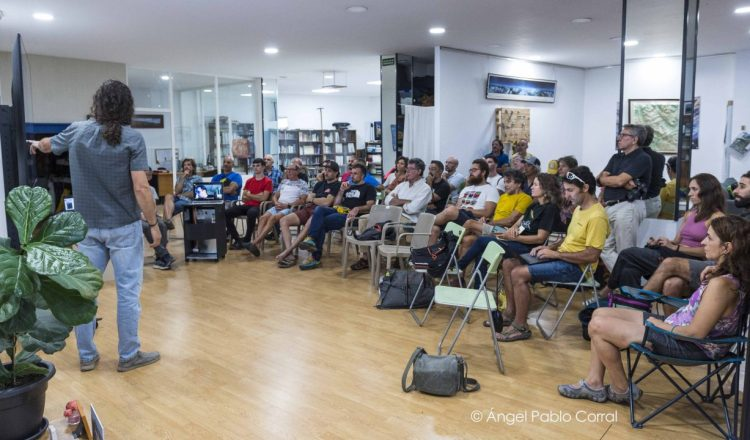

Articulo 1: Búsqueda de consenso en Galayos: creado un «Comité de seguridad»
En la reunión celebrada el viernes 12 de septiembre para debatir sobre la posible instalación y renovación de anclajes en Galayos, la balanza se inclina a mantener las agujas y las canales lo más limpias posibles y, sobre todo, se nombra a un “Comité de seguridad” que buscará el consenso para futuras actuaciones.
La reunión convocada por David Bautista para debatir sobre la posible instalación y renovación de anclajes en Galayos se prometía intensa. Le precedía un debate iniciado en redes sociales, con acaloradas voces a favor y en contra. En el origen de esta propuesta estaba, como explicó David en la convocatoria, el aumento de accidentes en la zona, en especial un accidente mortal ocurrido a finales del pasado mes de junio que, lógicamente, impactó en la comunidad. El escalador fallecido, Aaraón, era técnico de escalada con amplia experiencia. El accidente se produjo al rapelar de unos cordinos que rodeaban un bloque empotrado: una de las piedras que hacían oposición con el bloque se movió, provocando que el bloque se saliera de su emplazamiento, precipitándose junto al escalador en caída fatal por la canal, situada entre la aguja Tonino Ré y la punta Don Servando. Como respuesta a este accidente, el escalador Álvaro Martín –miembro del GREIM y uno de los responsables del atestado de este y otros muchos accidentes de Galayos– decidió por su cuenta instalar unos rápeles tanto en esa canal como en el clásico destrepe del Torreón, pintando además unos llamativos puntos rojos señalizando las instalaciones, para que no hubiera pérdida posible. Esto no fue del gusto de otros habituales de Galayos, que vieron además que podía sentar un precedente para el equipamiento indiscriminado y unilateral de otros destrepes o puntos conflictivos de la zona. Ante esta situación, podría haber llegado una “mano negra” cualquiera y haber desinstalado esos anclajes con la misma potestad que se otorgó quien los puso; como ha ocurrido tantas veces en esta y en muchas otras zonas. Por hechos como este la historia de Galayos nos recuerda que se llegó a las manos no hace tantos años. Alejado de este camino, David optó por impulsar el debate, intentando atraer a todas las voces posibles para poner sobre la mesa las distintas opciones y sus consecuencias. La reunión se celebró el viernes 12 de septiembre en la sede del Grupo Gredos (propietarios del refugio Victory y muy implicados con la escalada en la zona), en Arenas de San Pedro, Ávila. Acudió una treintena de personas, quizá no parecen muchas, pero a cada uno y cada una de los presentes le sostenía un fuerte vínculo con la escalada galayera. Entre ellos estaban escaladores veteranos como el imprescindible Ángel Rituerto, así como Ezequiel Conde, Gustavo Cuevas, Luis Fernando, Julio Blázquez, Tomás Mesón… También representantes de distintas generaciones junto a miembros destacados del Grupo Gredos, aperturistas de la zona, guías de escalada, otros guardas actuales y pasados del Victory, miembros del GREIM (que acudían a título personal), amigos de Aaraon, escaladores habituales jóvenes y no tan jóvenes… Entre ellos, nombres como Toti Sánchez, Gabriel Martín, Chema Mancebo, Javi Pavón, Jesús Velasco, Ángel Pablo Corral, Sara, Gonzalo, Tomás, Santi, Álvaro, Iván, Rubén… También participó –aunque no físicamente– Juan Carlos Castaño, responsable de equipamientos e instalaciones de la FEDME, que se hizo oír desde el otro lado de la pantalla en conexión directa. David trajo su exposición bien preparada: una a una, fue proyectando las imágenes de las distintas agujas, detallando el estado actual de sus instalaciones, tanto en reuniones como en cumbres y rápeles de bajada, desde las cimas o por las canales. En cada una se exponía si hacía falta algún cambio, renovación o nueva instalación, o incluso se planteó la posibilidad de eliminar alguna de las instalaciones obsoletas que no se utilizan. También intervino Gabi Martín desarrollando el estado de las agujas de la zona inferior, donde él ha equipado un buen número de itinerarios.